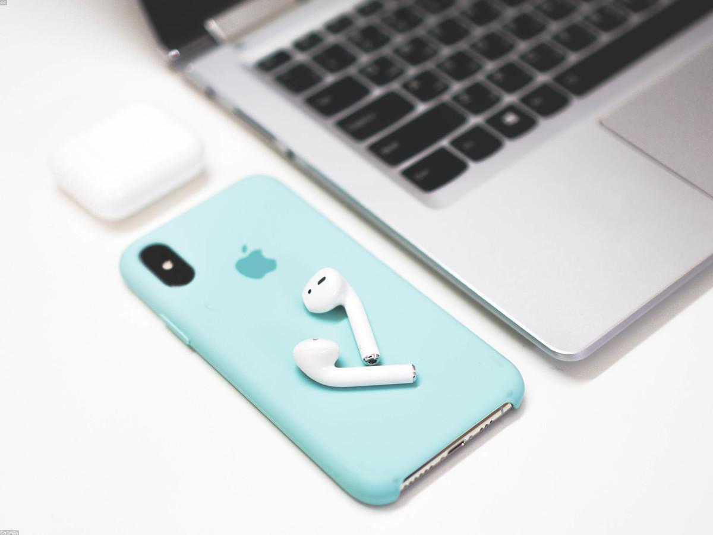
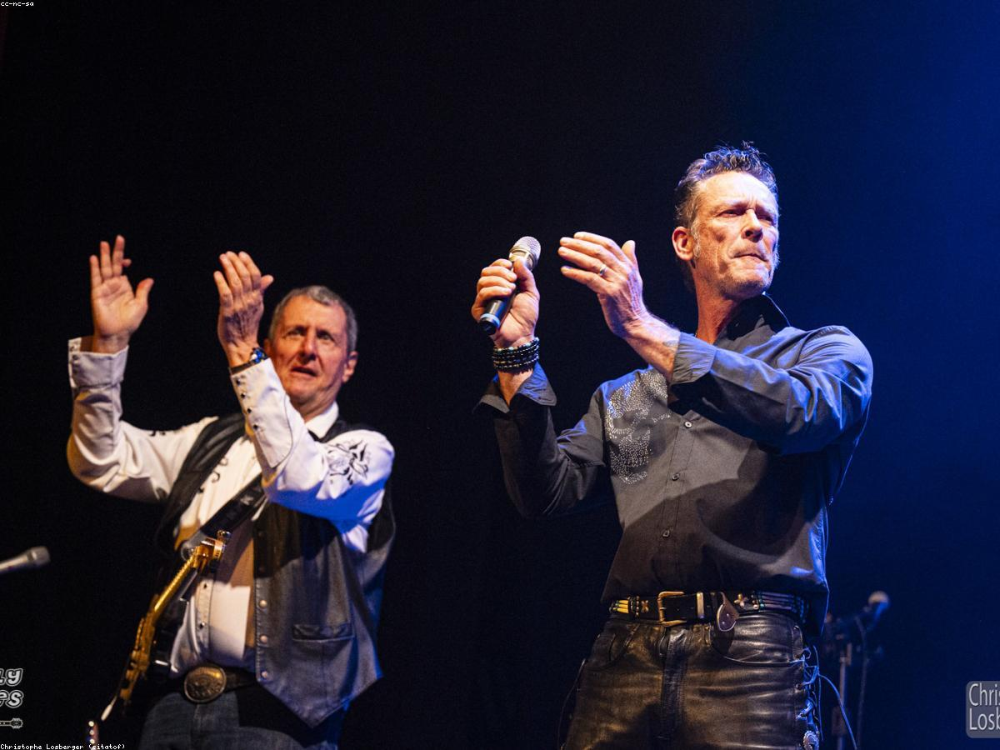

Bangalexzz Campaign Lab
2 jam lalu · Audience Test
Contoh post untuk awareness produk baru. Fokus di hook awal, visual kontras, dan CTA yang natural agar komentar meningkat.

1.2k reactions · 186 comments
87 shares
Demo handling konten social media
Bangalexzz Campaign Lab
2 jam lalu · Audience Test
Contoh post untuk awareness produk baru. Fokus di hook awal, visual kontras, dan CTA yang natural agar komentar meningkat.

1.2k reactions · 186 comments
87 shares
Faiznute Social Ops
Kemarin · Performance Report
Format carousel storytelling memberi retention lebih tinggi 34% dibanding single image. Ini salah satu strategi konten yang saya handle untuk klien.
